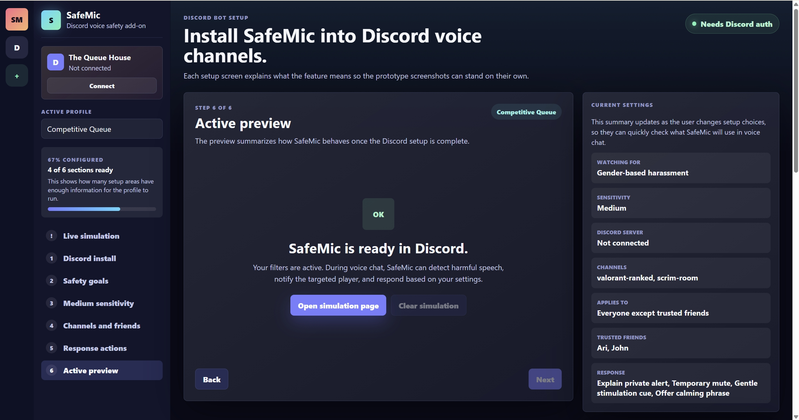
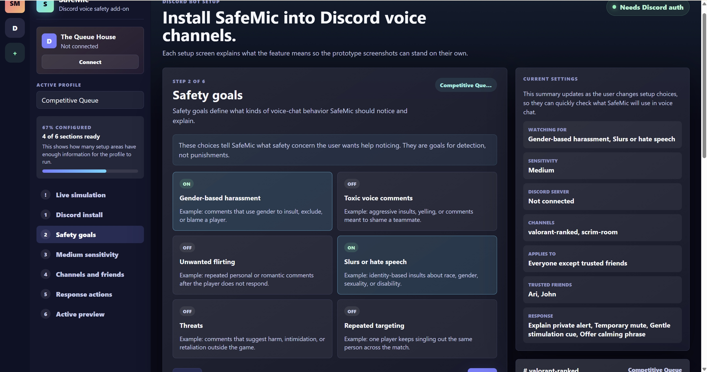
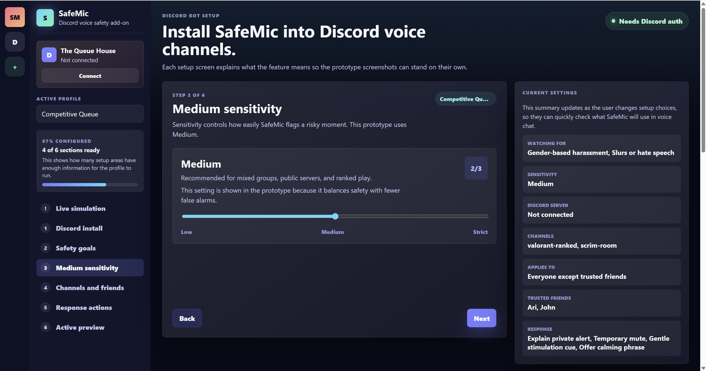
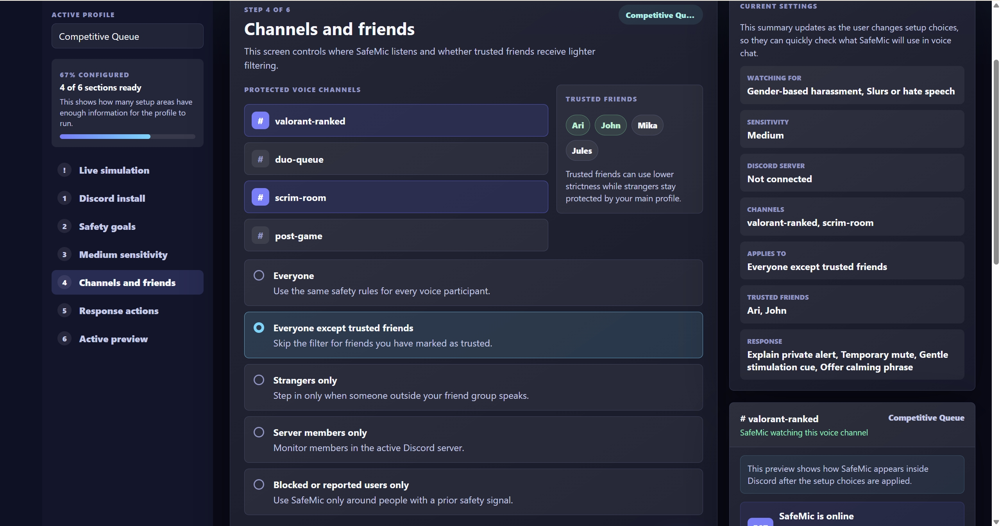
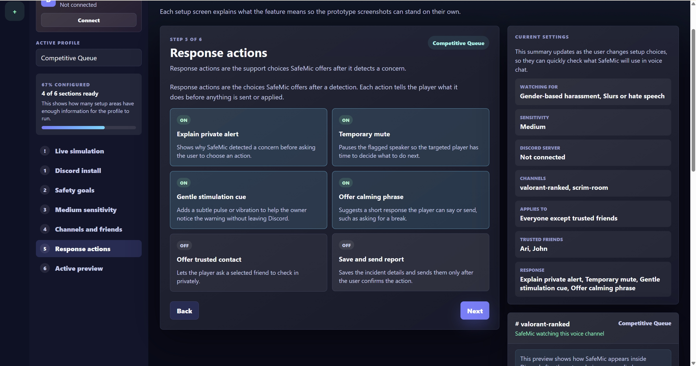
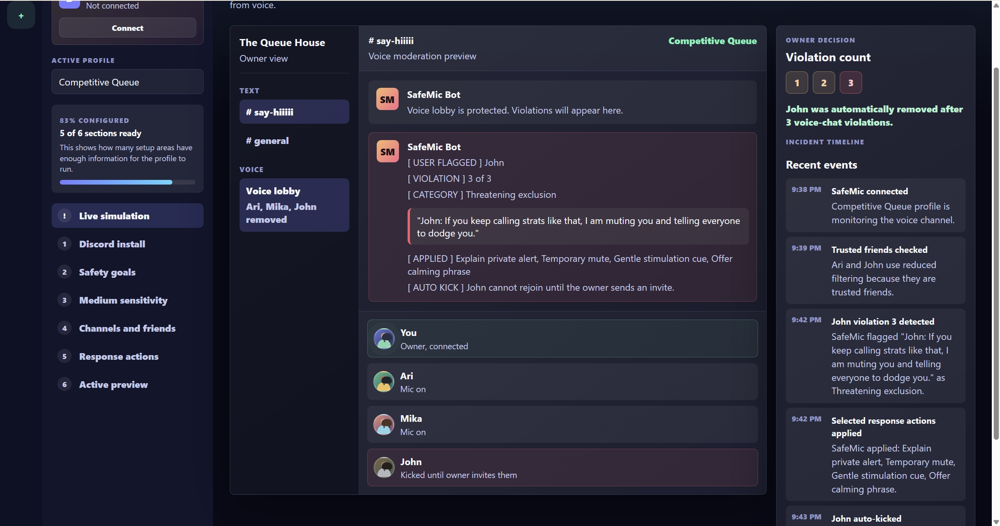

Inclusive Design / UX Research / Coded Prototype
SafeMic
A Discord voice safety add-on that helps players configure protection, understand flagged moments, and respond to harassment without losing control of the situation.

Snapshot
A coded prototype for safer online gaming voice chat.
Discord voice safety add-on
Partner research, UX flow, coded prototype
Gender-based harassment, private support, configurable moderation
React/Vite prototype with setup screens and live violation simulation
Why
Voice chat can make harassment immediate and personal.
Our partner wanted a way to reduce harmful voice-chat behavior without making the targeted player manage every conflict publicly.
Harassment often escalates after a player's identity is perceived through voice, especially around gender-based comments and repeated targeting.
SafeMic should support the player quietly, explain what happened clearly, and keep final response choices understandable.
My work
I translated partner requests into a working prototype flow.
I focused on partner communication and user research, then turned those findings into the coded prototype: setup screens, safety settings, response actions, and simulated moderation states that show how SafeMic would behave during voice chat.
Requirements
The experience needed to feel protective, not controlling.
Explain a detected concern to the targeted player before making the moment public.
Let users choose sensitivity, watched channels, trusted friends, and response actions.
Show what was flagged and why, so users can decide whether the system was correct.
Offer direct next steps such as mute, timeout, report, block, or keep current response.
Setup prototype
A step-by-step setup flow makes safety choices visible.




Prototype behavior
The coded prototype shows both setup and live moderation.

Configure
Users define safety goals, channel scope, trusted friends, and preferred responses.
Detect
The prototype simulates harmful voice behavior and explains the matched category.
Respond
SafeMic applies the selected support actions and shows the owner what happened.
Iteration
Research shaped a clearer, more realistic Discord experience.
Earlier concepts leaned toward automatic punishment. Partner feedback helped us shift toward transparency, player agency, and configurable boundaries instead.
Building the prototype in code made the idea easier to evaluate because people could move through setup, simulate incidents, and see how response choices affected the flow.
Outcome
SafeMic became a focused safety system, not just a report button.
The final prototype communicates a full product direction: install SafeMic, define a safety profile, preview how it will behave, then see a simulated moderation event with clear user choices. The next step would be broader testing around false positives, multilingual voice chat, and how much control different players want in the moment.